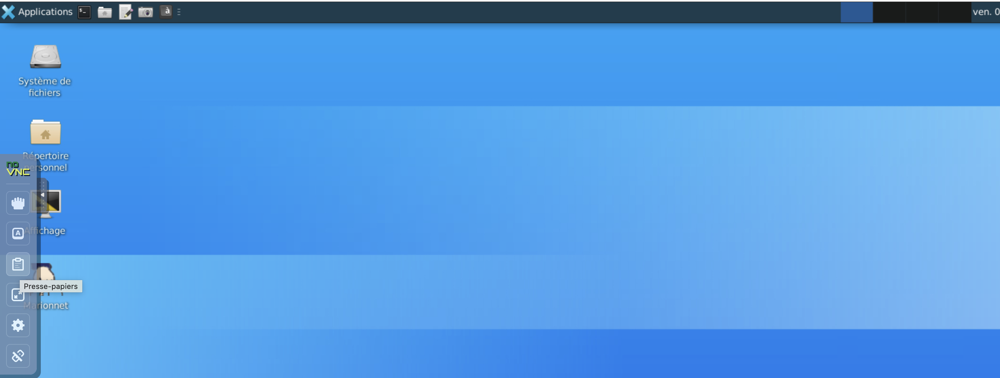

Lab 4 — Standard Channels and Redirections, Processes and Jobs, Signals¶
Learning Objectives (Bloom's Revised Taxonomy)
Upon completion of this lab, you will be able to:
- [Apply] redirect the standard streams of a command using
>,>>,<,1>,2>,0<. - [Apply] combine multiple commands with pipes (
|) to automate processing. - [Apply] observe and control processes with
ps,top,jobs,fg,bg. - [Analyze] distinguish a process from a job; distinguish foreground from background.
- [Apply] send signals to a process with
kill(SIGINT,SIGTSTP,SIGCONT,SIGTERM,SIGKILL). - [Evaluate] choose between graceful termination (
SIGTERM) and forced termination (SIGKILL). - [Create] (optional — ⭐) write a C program that reacts to signals and fork a child process.
Reference: Anderson, L. W., & Krathwohl, D. R. (2001). A Taxonomy for Learning, Teaching, and Assessing. Longman. ISBN 978-0801319037.
Prerequisites
- Lab 1, Lab 2 and Lab 3 completed: navigation, permissions, shell variables,
gcccompilation. - Debian 12 distribution or active MarioNum session.
- Minimal C knowledge (compilation with
gcc, covered in Lab 3).
Instructions
- The
$at the beginning of a line represents the prompt — do not type it. - For each new command, consult the manual page with
manor the--helpoption. - Do not hesitate to revisit previous labs for help.
About the lab answers
Before starting the lab, you must create a file named resultat_commande_TP4_LastnameFirstnameStudent.txt.
In this file, you will progressively record the results of the commands executed throughout the exercises.
Creating the file
- Right-click in your working directory
- Create a document → Empty file
- Name the file:
resultat_commande_TP4_LastnameFirstnameStudent.txt
Please note:
Your instructor must be able to view this file at any time to assess your progress.
To keep a copy of your work, make sure to save this results file locally on your machine before the end of the session.
Local save procedure:
- Click on the clipboard (to the left of your Debian virtual machine Desktop).

- Select the content of your results file and copy it.
- Paste the copied content into a new file on your machine.
Exercise difficulty scale
📚 = Easy · 📚📚 = Medium · 📚📚📚 = Advanced
Exercises 1 to 7 constitute the core curriculum, required for all students. Exercises 8, 9, 10 are supplementary exercises (⭐).
Alignment with assessments (Biggs, 1996)
Exercises 📚 and 📚📚 prepare for the CC S38 and the graded lab S40. Exercises 📚📚📚 prepare for the DE S42 (MCQ) through their analysis and justification dimensions.
Reference: Biggs, J. (1996). Enhancing teaching through constructive alignment. Higher Education, 32(3), 347–364. DOI: 10.1007/BF00138871.
1. Standard Channels and Redirections¶
The three standard channels
Every Unix process has, from the moment it starts, three open channels:
| Number | Name | Default role |
|---|---|---|
0 |
stdin (standard input) | reads from the keyboard |
1 |
stdout (standard output) | writes to the terminal |
2 |
stderr (standard error) | writes to the terminal (error messages) |
The shell allows you to redirect these channels to a file (or another channel).
Redirecting standard output
> redirects stdout to a file; >> appends to the end of the file.
>redirectsstdoutto a file. If the file exists, it is overwritten.>>redirectsstdoutby appending to the end of the file, without overwriting existing content.
Warning
> overwrites without asking for confirmation. To preserve existing content, use >>.
Exercise 1 — Redirecting standard output 📚¶
- Test the following commands and observe their results:
$ echo "Est-ce que j'apparais sur le terminal ?" $ echo "Ou bien dans le fichier ?" > fichier.txt $ cat fichier.txt $ echo "Et moi ?" > fichier.txt $ cat fichier.txt $ echo "Je ne veux pas vider le fichier" >> fichier.txt $ cat fichier.txt $ echo "Je veux vider le fichier" 1> fichier.txt $ cat fichier.txt $ echo "Je m'ajoute en fin de ligne" 1>> fichier.txt -
Recall what the
catcommand does (man cat), then answer:- What is the difference between `>` and `>>`? - What is the difference between `1>` and `>`? - What is the difference between `1>>` and `>>`? -
Navigate to your home directory and run:
- What does this command do? - Can you explain why the string
list_files.txtappears inside the filelist_files.txt?
Exercise 2 — Redirecting standard error 📚📚¶
- In a directory
dir, create a filefile-1.txtwhose content isHello world !. - Create a copy of
file-1.txtnamedfile-2.txt. Remove all read permissions fromfile-2.txt. - Type the following command and note the results (you will get errors):
- Which command succeeded? Which commands failed and why?
- Redirect the standard output of the previous command to a file
result.txt. Observe what is displayed on the terminal and what is inresult.txt. -
Then type:
1>redirects standard output (channel 1) toresult.txt,2>redirects standard error (channel 2) toerror.txt. This separates normal results from error messages.
-
Observe the contents of
result.txtanderror.txt. In your opinion, what do1>and2>mean? Draw a conclusion about the difference between standard output and standard error.
Redirecting standard input
Some commands read from the terminal (tr, read, etc.). Many others read from the terminal if no file is given as an argument (cat, grep, sort...).
Standard input is redirected with <:
fichier.txt is then connected to the standard input of cat.
Warning
The file fichier.txt must exist and be readable, otherwise the command fails.
Exercise 3 — Redirecting standard input and revisiting cat 📚📚¶
- Consult the manual for
catand find how it behaves when no file is given as an argument. - Test:
How many arguments did
catreceive? What did it display? Why? - Now test:
Display the contents of
catout.txt. What does it contain? Why? - Finally type:
- How many arguments did
catreceive? What did it display? - What is the difference between
<and0<?
2. Pipes¶
The pipe |: invented on a napkin in 1973
The pipe concept was proposed by Doug McIlroy (Bell Labs) as early as 1964, but it was Ken Thompson who implemented it in Unix in a single night in February 1973. The idea is remarkably elegant: rather than creating monolithic programs, you write small specialized tools and connect them together. This philosophy — "Do one thing and do it well" — became Unix's founding principle and still influences software architecture today (microservices, CI/CD pipelines).
McIlroy, M. D. (1978). UNIX Time-Sharing System: Foreword. The Bell System Technical Journal, 57(6), 1899–1904. DOI: 10.1002/j.1538-7305.1978.tb02135.x
Definition
A pipe connects the standard output of one command to the standard input of another. The | character is used.
For cmd1 | cmd2, the standard output of cmd1 becomes the standard input of cmd2. You can chain them:
Exercise 4 — Counting headers: all in one 📚📚¶
This exercise consolidates redirections and pipes. You will work with the .h files in the /usr/include directory (C library headers).
- Using only an output redirection, create a file
include_files.txtlisting all.hfiles in/usr/include: -
Test the following command and comment:
- The
|(pipe) connects the output oflsto the input ofwc. The-loption ofwccounts the number of lines received — here, the number of.hfiles.
Where is the result of
5. Analysis question: why does the result of question 4 differ from that of question 2? (Hint: doeslsredirected? Where does the standard input ofwccome from? Where is the result ofwcdisplayed? 3. Display on the terminal the sentenceIl y a <nombre> fichiers .h dans le répertoire /usr/includeusingechoand command substitution$(...)(covered in Lab 3, exercise 6). 4. Enter the following command and comment:wc -lreceive the file names or their content?) 6. Justification question: write a command that appends to the end ofinclude_files.txtthe sentence from question 3, using>>and command substitution. - The
This exercise is representative of a typical DE S42 (MCQ) item.
3. Processes and Jobs¶
Processes and Jobs
A process is a unit of work of the operating system: a program currently being executed. Each process is identified by a PID (Process IDentifier).
A job is a unit of work of the shell: a process (or group of processes) launched from that shell. The shell provides a job control system allowing you to run multiple commands simultaneously and switch between foreground and background.
A job is a process, but a process is not necessarily a job.
Main commands:
ps: lists the current user's processes. Option-e(or-A): all system processes.top: interactive process viewer, sorted notably by CPU usage. Quit withq.jobs: lists the current shell's jobs. Option-p: displays PIDs.fg %<n>: brings jobnto the foreground.bg %<n>: resumes jobnin the background.
Essential keyboard shortcuts
- Ctrl+Z: suspends the current job (signal
SIGTSTP). - Ctrl+C: interrupts the current job (signal
SIGINT). - Ctrl+D: sends an end-of-file (EOF) on standard input.
Exercise 5 — Observing a process with sleep 📚📚¶
- Run
sleep 10and observe: does the prompt return immediately? - Test the following sequence, noting the output of
pseach time: Whilesleep 240is running, press Ctrl+Z, then: Then Ctrl+C, then: -
Questions:
- What does Ctrl+Z do? And Ctrl+C?
- Redo the sequence by typing commands (for example
pwd,ls) betweensleep 240and Ctrl+Z. What do you notice? - What does
fg %1do in general?
Information about ps output
By default, ps returns four columns:
- PID: unique identifier of the process.
- TTY: associated terminal.
pts/Ndesignates pseudo-terminal number N. - TIME: CPU time consumed by the process.
- CMD: command that launched the process.
Exercise 6 — Foreground, background, switching 📚📚📚¶
This exercise asks you to write a small C program using the skills from Lab 3.
-
Write a C program
compteur.cthat indefinitely increments a variableiand displays its value on standard output every multiple of 100. Usesleepto slow down execution and observe the output.Where is
sleepin C?Type
man 3 sleepto see the signature of thesleepfunction in the standard library (<unistd.h>). -
Compile with
gcc -Wall -o compteur compteur.c. Test:$ ./compteur <Ctrl-z> # (i) $ jobs $ jobs -p # (ii) $ ps $ fg %1 <Ctrl-z> $ bg %1 $ fg %1 <Ctrl-z> $ jobs $ fg %1 <Ctrl-c> $ jobs- Ctrl+Z sends the
SIGTSTPsignal: the process is suspended (not terminated), it remains in memory. -pdisplays only the PID (numeric identifier) of each job, useful forkill.
- Ctrl+Z sends the
-
Analysis questions:
- What methods allow you to place a process in the background? In the foreground?
- What is the difference between Ctrl+Z and Ctrl+C?
- What is the purpose of the
-poption ofjobs? - What does
bgdo in general? - What job states did you observe? (Hint:
Running,Stopped,Terminated...)
This exercise is representative of a typical DE S42 (MCQ) item.
4. Sending Signals to a Process¶
The origin of 'daemon' and why SIGKILL is unstoppable
The word daemon comes from Greek mythology: a daimōn is an intermediary spirit working in the background, neither god nor mortal. In computing, the retrospective acronym Disk And Execution MONitor is sometimes proposed, but the creators of Unix (notably Fernando Corbató at MIT, CTSS/Multics project, ~1963) were indeed inspired by the mythological concept. As for the SIGKILL signal (9), it was deliberately designed to be impossible to catch or ignore: the kernel terminates the process directly, without letting it run any signal handler. This is a deliberate design choice — there must always be a last-resort mechanism.
Corbató, F. J. & Vyssotsky, V. A. (1965). Introduction and overview of the Multics system. Proceedings AFIPS Fall Joint Computer Conference, 185–196. DOI: 10.1145/1463891.1463912
Signals: communicating with processes
The shortcuts Ctrl+C, Ctrl+Z, and the fg / bg commands, actually send signals to the process. A signal is an asynchronous message sent to a process to request an action.
The kill command sends a signal to a process identified by its PID (or its job number %n).
Main signals:
| Signal | Typical origin | Semantics |
|---|---|---|
SIGINT (2) |
Ctrl+C | requests the interruption of the process |
SIGTSTP (20) |
Ctrl+Z | requests the suspension of the process |
SIGCONT (18) |
fg, bg |
requests the resumption of a suspended process |
SIGTERM (15) |
kill default |
requests a graceful stop of the process |
SIGKILL (9) |
kill -9 |
forced stop, the process cannot oppose it |
Full list: kill -L.
Who can send a signal?
You can only send a signal to processes that you own — unless you are root.
SIGKILL should be used as a last resort
SIGKILL does not let the process terminate gracefully (no memory deallocation, no saving of open files). Prefer SIGTERM.
Reference: POSIX.1-2017, Volume 1: Base Definitions, Chapter 2 §2.4 Signal Concepts, IEEE/Open Group, 2018. https://pubs.opengroup.org/onlinepubs/9699919799/
Exercise 7 — Manipulating signals with kill 📚📚📚¶
- Type
kill -Land note the numbers associated withSIGINT,SIGTSTP,SIGCONT,SIGTERM,SIGKILL. - The
&character at the end of a command launches it in the background. Launch three./compteurprocesses in the background: - Manipulate the signals:
-
Questions:
- What is the difference between
SIGINTandSIGTSTP? BetweenSIGTSTPandSIGTERM? - Based on your observations, how many different syntaxes of
killproduce the same effect? List them.
- What is the difference between
-
Evaluation question — for each of the following cases, indicate the most appropriate signal and justify:
- (a) a user wants to interrupt a program they just launched in their terminal;
- (b) an administrator wants to gracefully stop a system service;
- (c) a process is frozen and no longer responds to any command;
- (d) a developer wants to temporarily suspend a long computation without losing it;
Summary — What You Should Be Able to Do¶
Quick self-assessment (core curriculum)
Before leaving the session, verify that you can:
- Redirect
stdout(>,>>),stderr(2>),stdin(<). - Differentiate between
>and>>,1>and2>. - Chain commands with pipes
|. - Observe processes with
ps,top,jobs. - Suspend, resume and terminate a job (Ctrl+Z,
fg,bg, Ctrl+C). - Distinguish between process and job, foreground and background.
- Send a signal with
killusing the different syntaxes (-SIGTERM,-s SIGTERM,-15). - Choose between
SIGTERM(graceful) andSIGKILL(forced) depending on the context.
If an item is not checked, go back to the corresponding exercise.
⭐ Supplementary Exercises¶
Who are exercises 8, 9, 10 for?
You have completed exercises 1 to 7? These three exercises close the C programming progression started in Lab 3 and have you write a mini-shell.
Reminder of system calls covered in Lab 3 ⭐: open, read, write, close, perror, dup, dup2.
Lab 4 ⭐: signal, fork, exec*, wait — the core of Unix multitasking.
The targeted taxonomic levels are [Analyze], [Evaluate] and [Create] (Bloom's revised).
These exercises are optional and not graded.
Exercise 8 — Catching a signal in C with signal() ⭐¶
The signal() system call allows you to install a handler that will be called each time the process receives a given signal.
- Read the manual page:
man 2 signal. Note the signature. - Create
catch-sigint.c:#include <stdio.h> /* printf */ #include <signal.h> /* signal, SIGINT */ #include <unistd.h> /* sleep */ static volatile int compteur_sigint = 0; void handler(int sig) { compteur_sigint++; printf("\n[Signal %d reçu — total : %d]\n", sig, compteur_sigint); } int main(void) { signal(SIGINT, handler); printf("PID = %d. Appuyez sur Ctrl-C plusieurs fois...\n", (int)getpid()); while (compteur_sigint < 3) { sleep(1); } printf("Trois SIGINT reçus, je m'arrête proprement.\n"); return 0; } - Compile:
gcc -Wall -o catch-sigint catch-sigint.c. - Run
./catch-sigint, then press Ctrl+C 3 times. -
Questions:
- Why does Ctrl+C no longer interrupt the program?
- Try sending
SIGTERMfrom another terminal:kill <PID>. What happens? - Then try
kill -9 <PID>. What happens? Why?
Important note
signal() has historically variable semantics across systems. In production, sigaction() is preferred (see man 2 sigaction) as it offers more deterministic behavior.
Reference: Kerrisk, M. (2010). The Linux Programming Interface. No Starch Press. ISBN 978-1593272203. Chapters 20 (Signals: Fundamental Concepts) and 22 (Signals: Advanced Features).
Exercise 9 — Creating a child process with fork() ⭐¶
fork() is the system call that duplicates the calling process: upon returning from fork(), two identical processes execute in parallel. The return value allows you to distinguish them:
> 0(child's PID) → we are in the parent.== 0→ we are in the child.< 0→ failure.
- Read:
man 2 forkthenman 2 wait. - Create
fork-demo.c:#include <stdio.h> #include <unistd.h> /* fork, getpid, getppid */ #include <sys/wait.h> /* wait */ #include <stdlib.h> /* exit */ int main(void) { printf("Avant fork : PID = %d\n", getpid()); pid_t pid = fork(); if (pid < 0) { perror("fork"); return 1; } if (pid == 0) { /* --- Code du processus fils --- */ printf("[FILS] PID = %d, parent = %d\n", getpid(), getppid()); sleep(2); printf("[FILS] Je termine.\n"); exit(0); } else { /* --- Code du processus parent --- */ printf("[PARENT] PID = %d, fils créé = %d\n", getpid(), pid); int status; wait(&status); /* attend la fin du fils */ printf("[PARENT] Le fils %d s'est terminé.\n", pid); } return 0; } - Compile and run several times. Observe the PIDs.
-
Questions:
- Why do we see a "Avant fork" message followed by two distinct continuations?
- Why call
wait()on the parent side? (What happens to a child whose parent does not callwait? Search for "zombie process" inman 2 wait.) - Modify the program to create two children (two successive
fork()calls on the parent side). The parent must wait for both children before terminating.
Exercise 10 — Mini-project: a mini-shell that executes a command ⭐¶
When you type ls /tmp in bash, the shell actually does:
fork()→ creates a child process.- Child side:
exec*()→ replaces the child's memory image with that ofls. - Parent side:
wait()→ waits for the child to finish.
You are going to reproduce this mechanism.
- Create
mysh.cin~/ti307/c/:#include <stdio.h> #include <unistd.h> /* fork, execvp */ #include <sys/wait.h> /* wait */ #include <stdlib.h> /* exit */ int main(int argc, char **argv) { if (argc < 2) { fprintf(stderr, "Usage: %s <commande> [arguments...]\n", argv[0]); return 1; } pid_t pid = fork(); if (pid < 0) { perror("fork"); return 1; } if (pid == 0) { /* Fils : remplace son image mémoire */ execvp(argv[1], &argv[1]); /* execvp ne revient que s'il a échoué */ perror("execvp"); exit(127); } else { /* Parent : attend le fils */ int status; waitpid(pid, &status, 0); if (WIFEXITED(status)) { printf("\n[mysh] Le fils a terminé avec code %d.\n", WEXITSTATUS(status)); } } return 0; } - Compile:
gcc -Wall -o mysh mysh.c. - Test:
-
Analysis questions:
- Why does
execvpnever return if everything goes well? - What is the difference between
execv,execvpandexecve? (Hint:man 3 exec.) - Combine what you have learned: modify
mysh.cso that the output of the executed command is redirected to a filemysh.out. (Hint: before theexec*, usedup2as in exercise 10 of Lab 3.)
- Why does
Congratulations
You have just implemented the core functionality of a Unix shell: fork + exec + wait + redirection via dup2. All these building blocks are what bash itself does internally for every command you type.
Reference: Kerrisk, M. (2010). The Linux Programming Interface. No Starch Press. ISBN 978-1593272203. Chapters 24 (Process Creation), 27 (Program Execution), 26 (Monitoring Child Processes).
Further Reading (Recommended)¶
- POSIX.1-2017, Base Specifications Issue 7: https://pubs.opengroup.org/onlinepubs/9699919799/
- Kerrisk, M. (2010). The Linux Programming Interface. No Starch Press. ISBN 978-1593272203. (Canonical reference for ⭐ exercises.)
- Stevens, W. R., & Rago, S. A. (2013). Advanced Programming in the UNIX Environment, 3rd ed. Addison-Wesley. ISBN 978-0321637734.
- Robbins, A., Hannah, E., & Lamb, L. (2008). Learning the bash Shell, 3rd ed. O'Reilly. ISBN 978-0596009656.
- Tanenbaum, A. S., & Bos, H. (2014). Modern Operating Systems, 4th ed. Pearson. ISBN 978-0133591620. (Chapter 2 — Processes and Threads.)